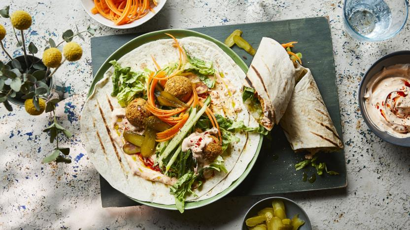

Back to homepage
Falafel Wraps

"This falafel recipe is my idea of tasty, fast food - just load up the tortillas and tuck in!" - Jamie Oliver
*Suitable for Vegetarians*
Details:
- Serves: 4
- Cooks in: 15 minutes
- Difficulty: Not too tricky
Ingredients:
- 1x 400g tin of mixed beans
- 1x 400g tin of chickpeas
- 1 Lemon
- 1 TBSP of harissa
- 1 heaped TSP of allspice
- 1 heaped TBSP of plain flour
- 1 bunch of fresh coriander
- Olive Oil
Instructions:
- Drain the beans and chickpeas and put them into the processor.
- Finely grate in the lemon zest, then add a pinch of sea salt and black pepper, the harissa, allspice, flour and coriander stalks (reserving the leaves). Blitz until smooth, scraping down the sides of the processor if needed.
- Scrape out the mixture and use clean, wet hands to quickly divide and shape it into 8 patties about 1.5cm thick.
- Put 1 tablespoon of oil into the frying pan and add the falafels, turning when golden and crisp.
- Rip the seeds and stalks out of the peppers and tear each one into bite-sized chunks. Trim and halve the spring onions, then put on the griddle pan with the peppers and a pinch of salt and pepper, turning when charred.
- Put the tomatoes, chilli and half the coriander leaves into the processor. Squash in the unpeeled garlic through a garlic crusher, squeeze in the lime juice, whiz until fine, then season to taste and pour into a serving dish.
- Pop the tortillas into the microwave (800W) for 45 seconds while you marble the chilli sauce into the cottage cheese.
- Squeeze the juice of half the zested lemon over the charred veggies, then take with the falafels to the table, scattering everything with the rest of the coriander.
- Let everyone assemble their own wraps, and serve with pickled red cabbage, if you like.